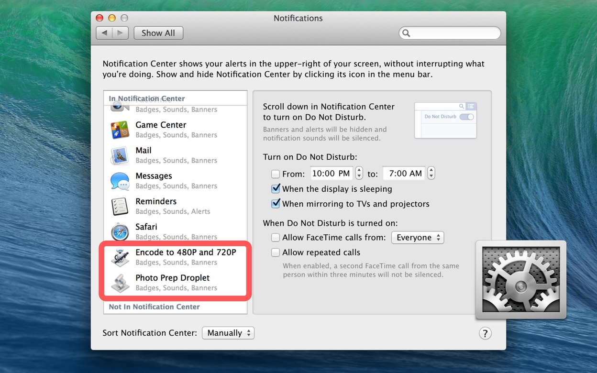
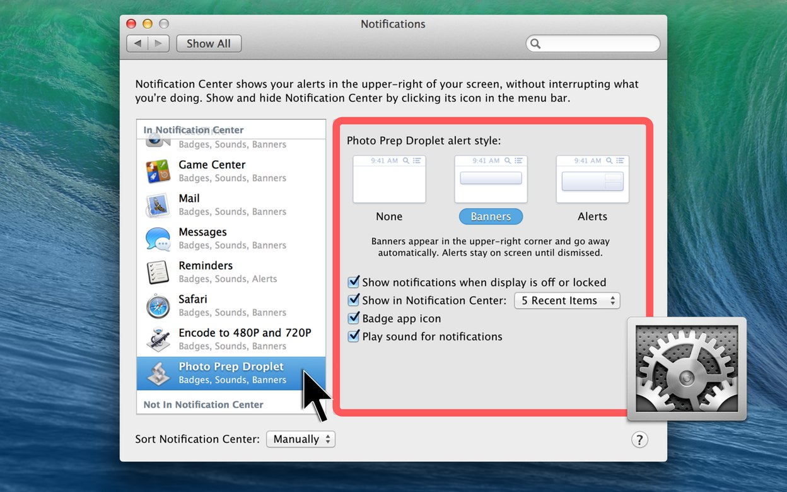
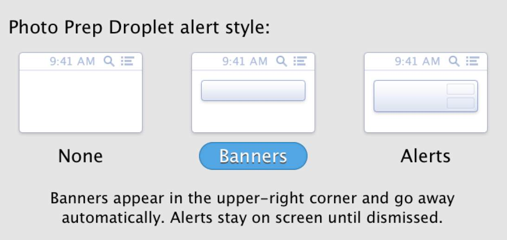
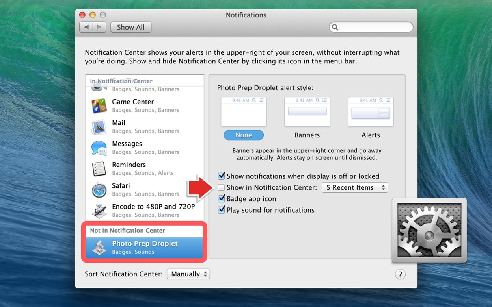

After their first time running, AppleScript or Automator applets that contain notification commands or actions, will automatically be added to Notification Center’s list of notifying applications, displayed in the Notifications system preference pane, within the System Preferences application (⬇ see below) :

To set the notification parameters for an automation applet, select it in the Notification Center list, and the notification controls for the selected applet will be displayed on the right side of the preference window (⬇ see below) :

To determine how (or if) the applet’s notification window will be displayed, press the icon of the notification option you want to assign the automation applet (⬇ see below) :

To disable notification for the automation applet, deselect the checkbox titled Show in Notification Center, and the applet will be move to the lower list of applications not in Notification Center (⬇ see below) :
